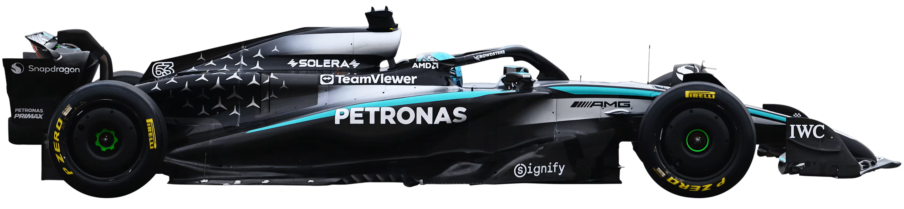
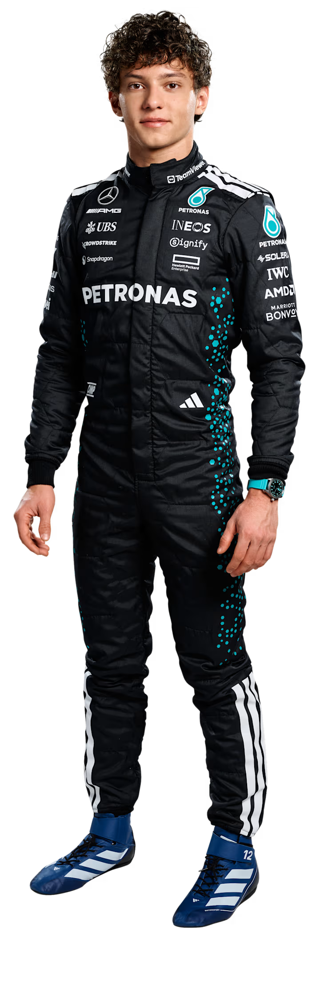
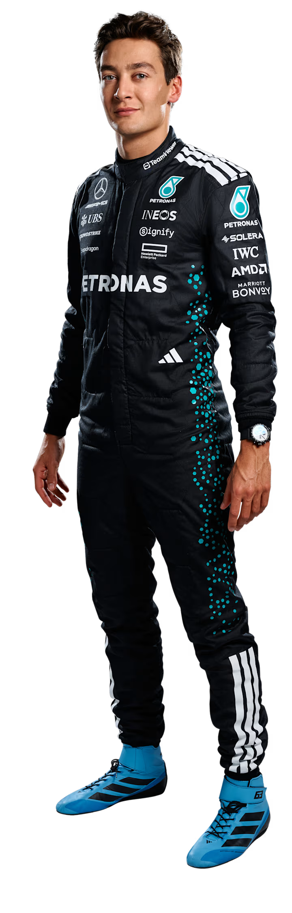

O renascimento moderno da Mercedes na F1 começou com a criação de uma equipa oficial em 2010 — o ponto de partida para uma ascensão meteórica na hierarquia da Fórmula 1. A equipa gerou enorme entusiasmo logo de início com o sensacional regresso de Michael Schumacher, mas os destaques logo se estenderam à pista: três pódios na temporada de estreia, todos conquistados por Nico Rosberg — que depois alcançou uma pole position e vitória histórica na China, em 2012.